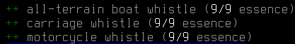
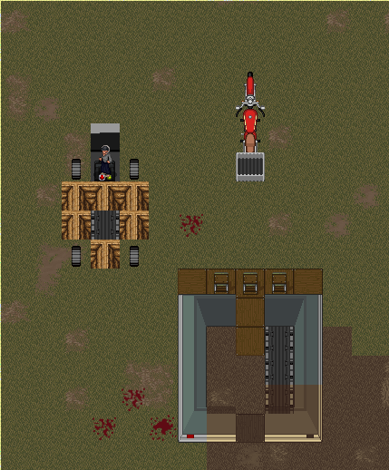
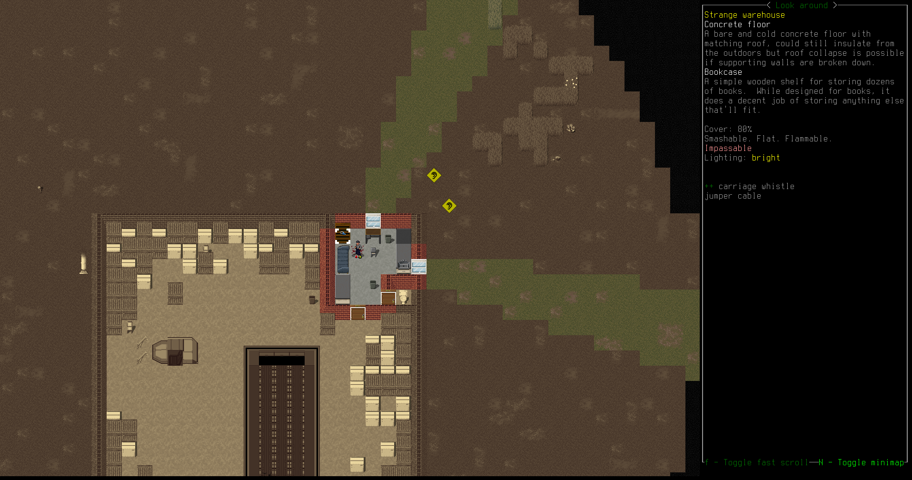

Cataclysm: DDA's premier magic mod is Magiclysm, which not only adds an entire magic system and slew of useful spells, items, and locations but also alters the lore of the game to imply that magic has existed throughout history. This lore breaks significantly from real world history, so I prefer mods that keep magic as something esoteric and hidden, such as the newly added mod Mind Over Matter or the mature Arcana mod.
However, there is one particular spell from Magiclysm that I love that is not available in any other mod: the Summon Motorcycle spell. This is amazingly useful and fun to play with, so I decided to port the idea over to Magiclysm in my own mod. This new mod, Arcana Technoclysm, currently adds three temporary summonable vehicles and a new location to find the magic whistles needed to summon these vehicles. It's a simple mod but fills in the summonable vehicle gap in the more lore-friendly magic mods. The vehicles currently available are an amphibious boat with wheels, a motorcycle, and a horseless carriage with plenty of cargo space. Each of the vehicles is a tradeoff between maneuverability, compatible terrain, and cargo space, so hopefully players will have incentive to find strange warehouses and collect all the magic whistles.
  